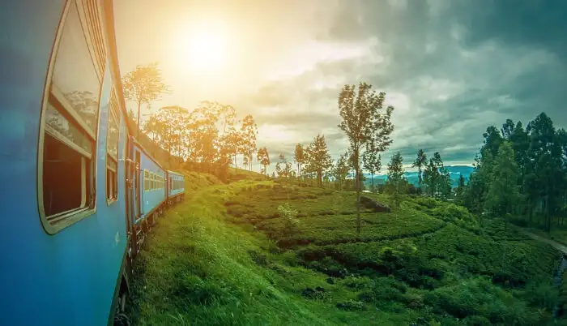

Some places to explore

Phuket is one of the best destinations in January. The golden beaches, the bustling beach shacks, the exhilarating water sports in Phuket must not be missed.
Bali is a year-round destination, but for the travelers seeking a peaceful vacation in the Island of Gods, January is just the perfect time.

Sri Lanka is one of the warm places to visit in January. This island retreat has lovely beaches, charming hill stations, exhilarating wildlife, and heritage monuments.
Lofty peaks, serene islands, and sizzling beaches are the delightful places to visit in Seychelles during winter.